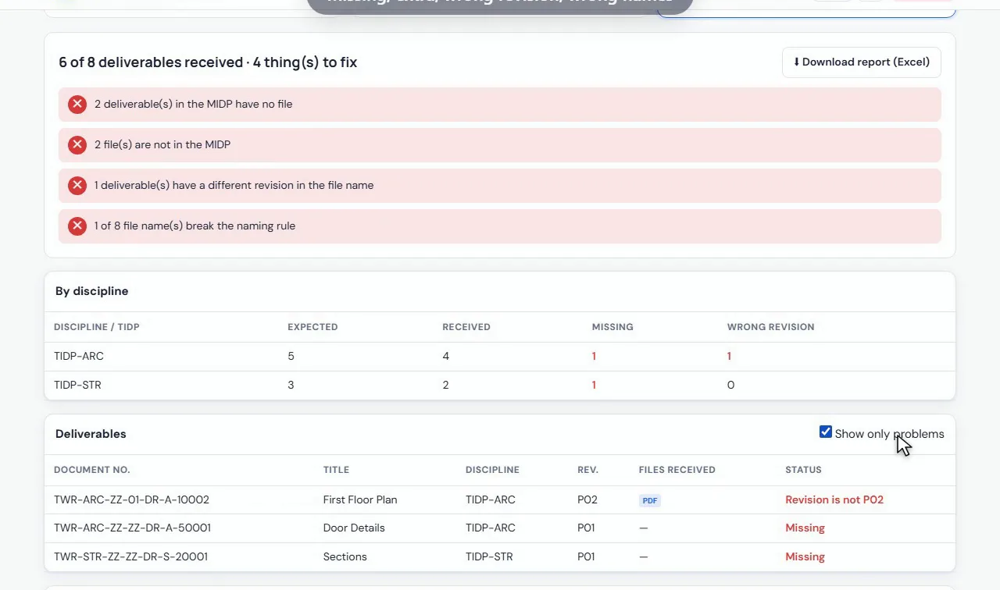

How to check a submission against the MIDP and ISO 19650 file naming
Compare every file in a submission with the MIDP and the TIDPs of each discipline, and check every file name against your ISO 19650 naming rule, in one report.
Your files stay on your computer. Nothing is uploaded.
Short answer
Open MIDP Check, add the MIDP or one TIDP per discipline (Excel), add the submission folders, let the tool learn the naming rule from the files, and click Next. You get the missing deliverables, extra files, wrong revisions and wrong names, and a report in Excel.
Why checking a submission by hand is a problem
On an ISO 19650 project every deliverable should match a line in the MIDP, with the right document number and revision. Before a submission is accepted, the information manager has to tick each file against the list and check every name, field by field.
With several disciplines and hundreds of files, a missing drawing, a model at the wrong revision or a name with one field wrong is easy to miss, and it comes back later as a rejected submission.
Step by step
Add the MIDP or the TIDPs
Click Add Excel file and add the MIDP, or one TIDP per discipline. For each file, pick the column that holds the document number. No MIDP yet? Skip this step and check only the names.
Add the submission folders
Click Add folder and choose the received folder. Add one folder per discipline if you like. PDF, DWG, RVT, IFC, NWC, DOCX and XLSX all count.
Revision in the name
If the file names carry the revision, for example A-101_P02.pdf, tick File names include the revision so it is compared with the MIDP.
Set the naming rule
Click Learn from the files, or type one correct name and click Split into fields. Adjust each field: its length, letters or digits, and the allowed values.
Read the report
Click Next. The report lists missing deliverables, files not in the MIDP, wrong revisions and names that break the rule, per discipline and file by file. Click Download report (Excel) to send it.

What the report shows
- Deliverables in the MIDP with no file received.
- Files received that are not in any plan.
- Files whose revision is different from the MIDP.
- File names that break the naming rule, with the field that is wrong.
An example naming rule
ISO 19650 names are made of fields joined by a separator, for example PRJ-ORG-VOL-LVL-TYP-ROL-NUM, as in TWR-ARC-ZZ-01-DR-A-10002. The tool reads each field from the received files, shows the values it found, and flags a name where a field has the wrong length or a value that is not allowed.
Check your submission now
Free, runs in your browser, and your files never leave your computer.
Open MIDP Check →Questions
How do I check files against the MIDP?
Add the MIDP or TIDPs in Excel and the submission folders to MIDP Check. The report shows what is missing, extra or at the wrong revision.
Can it check ISO 19650 file names?
Yes. It learns the naming rule from the files or from one correct name, and checks every name field by field.
Do I need a MIDP to use it?
No. Skip the first step and it checks only the file names against the naming rule.
Are the project files uploaded?
No. Only the file names are read, by your browser on your own computer. Nothing is sent to a server.
Which file types does it check?
All of them: drawings, models, reports and schedules, for example PDF, DWG, RVT, IFC, NWC, DOCX and XLSX.